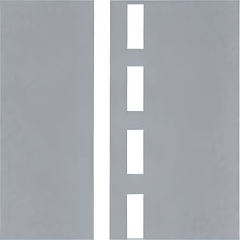

Loading...

Combined white lines: Overtaking permitted from one side
🛣 Road Markings
📖 Description
A solid line paired with a broken line indicates that overtaking is allowed only for the side with the broken line. Drivers on the solid-line side must not cross or overtake. This marking is used where overtaking is safe in one direction but dangerous in the other.